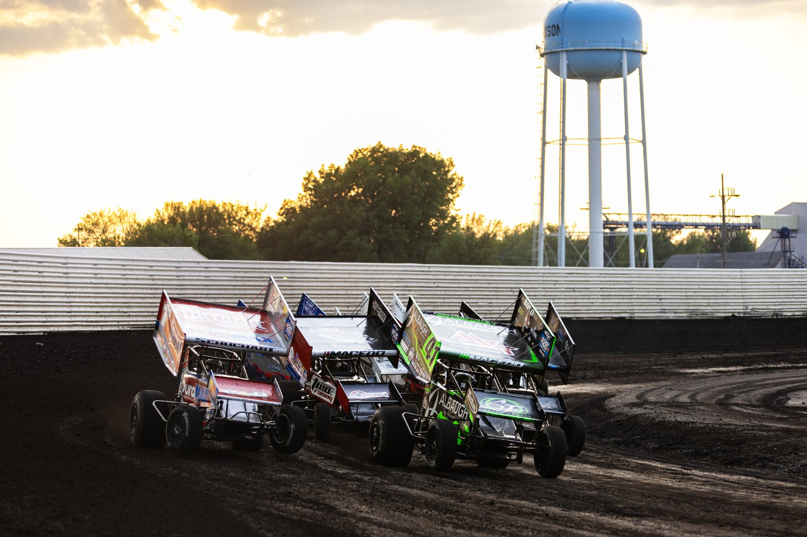

Jackson Motorplex Sets Nine-Race 2027 Schedule Led by World of Outlaws Jackson Nationals
The 2027 schedule includes five 410 sprint car shows and closes with the World of Outlaws at the 49th annual Jackson Nationals on Aug. 20–21.

Jackson Motorplex in Jackson, Minnesota, will hold nine races in 2027, including five Bank Midwest 410 Sprint Car shows and the four-race Heiman Fire Equipment Mayhem Summer Series, according to a track release distributed by Inside Line Promotions on Nov. 19 and reported by SPEED SPORT.
The season ends Friday and Saturday, Aug. 20–21, when the World of Outlaws NOS Energy Drink Sprint Car Series races the 49th annual FENDT Jackson Nationals presented by Mau Marine, according to the release. The World of Outlaws schedule lists the event for the same dates. The release said the opening night also serves as the Tweeter Memorial.
The Midwest 410 Sprint Touring Series is scheduled for May 21, July 9 and July 30, according to the release. The Friday, May 21, race is the 2026 Merle Johnson Memorial, which was postponed because of weather, and the Bumper to Bumper IRA Outlaw Sprint Series is also on that card. The 2027 Merle Johnson Memorial is Friday, July 30. The release said both Merle Johnson Memorial races pay $10,000 to win.
Drivers and teams in the 410 sprint car shows will race for the Bank Midwest Championship, which includes a point fund for those who take part in all five 410 events, according to the release. Heser Auto & Detailing RaceSaver Sprint Cars will race at the three Midwest 410 Sprint Touring Series events and all four Thursday nights of the Mayhem Summer Series, June 3, June 10, July 8 and July 22.